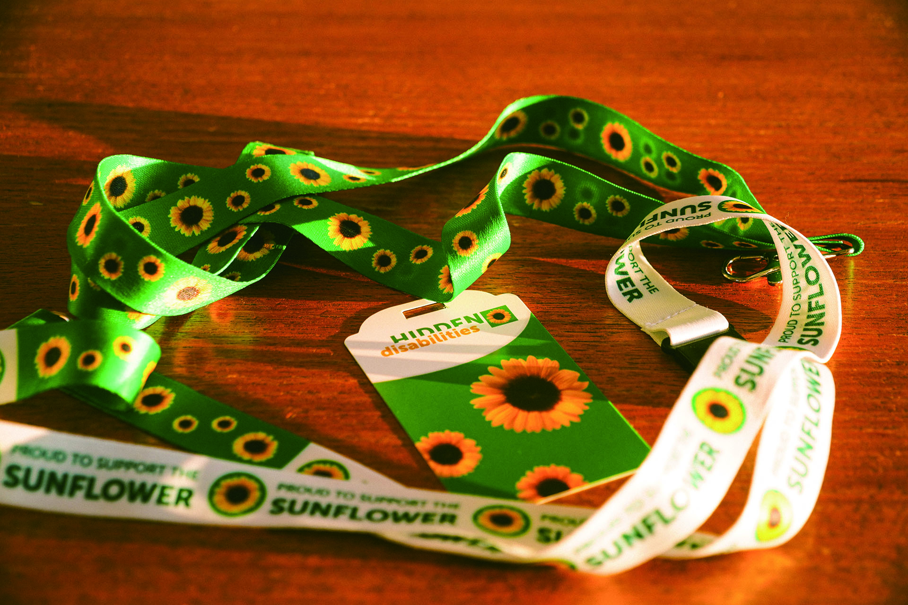

The Boundaries We Can’t See
What’s Behind Boston’s New Sunflower Lanyard Program
By Chloe Nie
Airports are built for speed, but not everyone moves at the same pace. For travelers with autism, chronic illness, or severe anxiety, the most difficult boundary isn’t the metal detector — it’s the one we can’t see: noise, glare, rushing crowds, and the pressure to keep up. This spring, Logan Airport joined the global Hidden Disabilities Sunflower, which allows travelers with invisible disabilities to wear sunflower lanyards as a subtle way to signal they may need patience, help, or understanding—without having to explain it every time. With it, Boston has a rare chance to recognize those boundaries we cannot see.
“Invisible needs deserve visible care.”
“When we go through TSA, they often ask children their names or where they’re going,” said Anne Savery, a mother traveling with her nine-year-old son Robby, who has autism. “Our daughter answers fine, but Robby just freezes. The staff saw his lanyard and immediately understood—they gave him time, they were patient. It makes such a difference.”
For Robby, who speaks fluently at home but often goes silent under stress, that quiet understanding extends beyond security. “One time, a flight attendant was crushing ice for first class,” Anne recalled. “She saw the lanyard on Robby, and immediately stopped—she knew the sound might be overwhelming.” These moments may seem ordinary, but to families like Robby’s, they are proof that the program works. “We don’t want special treatment,” she emphasized. “It’s just nice to know that people understand—and if we need help, there’s someone ready to step in.”
Launched in the U.K. in 2016, the Hidden Disabilities Sunflower is now recognized across transportation, retail, and public places worldwide. Nearly 300 airports around the world now participate, along with dozens of airlines — Logan joined the network this year. Passengers who wear a Sunflower lanyard as a quiet reminder that they may need extra time, clearer instructions, or a quieter route.
At Logan, passengers can pick up a free Sunflower lanyard at any terminal information booth. Because some booths are virtual, travelers can use the video-chat feature or flag a roaming customer-service agent to request one — “we’ll come wherever you are,” said Mia Healy-Waldron, Massport’s deputy director of customer service. She added that they’ve put “a bit of a concierge spin on it” — passengers can call ahead to pre-arrange a handoff, with a staffer meeting them in the terminal to deliver the lanyard and answer questions. Healy-Waldron says all customer-facing staff are trained to recognize the symbol. Since the April rollout, the airport has distributed about 500 lanyards.
A critical piece of the rollout was training — a requirement from the global Sunflower organization. But what exactly should staff take away from it? For Mia Healy-Waldron, the lesson is simple but powerful: “The really important thing here is to act normally,” she said. “Just treat them the same way you would treat anyone else.”
 The program’s ingenuity shines through in a warm detail. As Healy-Waldron explained, alongside the green lanyards for travelers, a white version is available for public supporters, printed with the words, “Proud to Support the Sunflower.” It acts as a signal to those wearing a green lanyard that a fellow passenger is an ally. Help is no longer limited to official staff; it’s woven into the community.
Logan has paired the lanyard program with other accessibility initiatives, including its Sensory/Calming Room in Terminal E and the Wings for Autism program, which allows families to rehearse the airport experience in a supportive environment. The timing of the Sunflower launch created a particularly powerful moment. The rollout came just before a Wings for Autism event in the spring, where many parents — already familiar with the global program — had long been asking when Logan would join. When they arrived and saw the Sunflower lanyards finally available, “The parents were over the moon,” Healy-Waldron recalls. “That was a pivotal moment for us to be able to say, ‘Yes, we’ve got it. Whatever you need, we have the lanyards, we can provide assistance, we’re here for you.’”
This integrated approach includes physical spaces, but Anne notes that for some families, nuance is key. She’s heard of Logan’s Sensory Room but points out a potential challenge: “If it’s other autism families, that’s perfect — we all understand each other. But if it’s a place where everyone must stay quiet, that might make us more anxious.” Her words reveal a subtle truth: true inclusion isn’t just about building spaces, but about designing them around how people really live and feel.
Early feedback from other airports shows both promise and challenges. Many travelers say they feel relieved because they don’t have to explain their conditions repeatedly. But some mention that not every staff member knows what the lanyard means — and a few worry about stigma or unwanted attention. Advocates argue that programs like this are just the beginning, and that public spaces should move beyond symbols and truly design for people with invisible disabilities.
Anne hopes to see this understanding spread. “I’d love to see the Sunflower used beyond airports — in amusement parks, school cafeterias, anywhere fast-paced where people might need more time,” she said. If the Sunflower Program proves successful at Logan, it could spark a broader wave of adoption across Boston — museums, stadiums, maybe even the T. For organizations considering the step, the path to joining is both straightforward and well-supported. Sunflower appoints regional managers, so a Boston museum or library would have a dedicated point person to guide them. According to Healy-Waldron, the support is comprehensive, providing “a really strong launch deck and program” and help with a full marketing campaign to ensure a successful rollout on social media and other channels. Healy-Waldron describes it as “a really easy onboarding process and absolutely worth it”.
However, the key to making a genuine impact goes beyond logistics. “What really makes a big difference is when the organizations themselves embrace it at the corporate and internal level,” she said. “It becomes part of their company culture — a message that ‘we care about this.’”
For Robby’s family, that message has already taken root. “Every time we travel now, Robby runs to get his lanyard — it’s his way of saying, ‘We’re going on a trip!’” Anne said with a laugh. “It’s become part of our family’s story.”
One small sunflower carries a big idea: what would Boston look like if every public space quietly said, “We see you, and we’ll meet you where you are”?